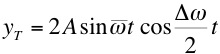

"If God created the world, his primary
worry was certainly not to make it easy for us to understand"
Albert Einstein (1954)
We have seen the phenomenon of constructive and destructive
interference between two waves leading to a standing wave
pattern. In a standing wave pattern the amplitude of the
wave depends on position, but the shape of the pattern does not
change with time. Beats is the name given to the
phenomenon of a standing wave pattern which varies with time.
Imagine the interference of two equal amplitude waves whose
frequencies are slightly different. For a non dispersive
medium this means that the wave numbers are also slightly
different. The resultant amplitude is given by,
At x = 0 this
can be written,

where,
The resultant interference
pattern is the blue wave below, where the interfering
waves are shown in black and grey. We can think of
the sine wave of the overall amplitude being "modulated" by the
cosine term.
If the interfering waves are sound waves the
amplitude (volume) heard at a particular point in
space will oscillate at the "beat
frequency", where